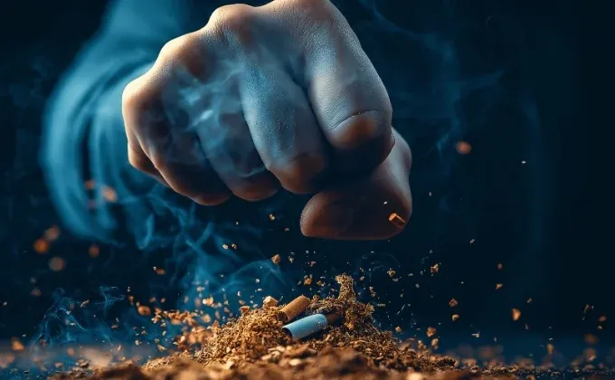

Çaykara Bağımlılıkla Mücadele ve Önleyici Farkındalık Programı

Çaykara Bağımlılıkla Mücadele ve Önleyici Farkındalık Programı, Dijital Sürdürülebilir Liderlik Derneği (DESİL) tarafından planlanan ve Yeşilay Trabzon Şubesi iş birliğiyle yürütülmesi öngörülen, öğrencilere yönelik önleyici bir sosyal sorumluluk projesidir. Program, bağımlılığın yalnızca bireysel değil; aileyi, eğitim ortamlarını ve toplumsal yapıyı doğrudan etkileyen çok boyutlu bir risk alanı olduğu gerçeğinden hareketle tasarlanmıştır.
Günümüzde çocuklar ve gençler arasında bağımlılıkla tanışma yaşının giderek düşmesi, önleyici çalışmaların erken yaşta, sahaya dayalı ve uzman destekli biçimde yürütülmesini zorunlu kılmaktadır. Çaykara, nüfus bakımından küçük bir ilçe olmasına rağmen son yıllarda artış gösteren bağımlılık vakalarıyla dikkat çekmektedir. Bu tablo, yerel ölçekte planlı, sürdürülebilir ve bilimsel temelli farkındalık programlarının hayata geçirilmesini gerekli kılmaktadır.
Bu projede Yasin Yavuz’un yürüttüğü planlama ve koordinasyon süreci; hedef kitle analizi, okul bazlı uygulama takvimi ve paydaş yönetimini kapsamaktadır. Program, Çaykara’daki 5 ortaokul ve 3 lisede öğrenim gören toplam 932 öğrenciye üç gün boyunca ulaşmayı hedeflemektedir. Eğitim içerikleri; bağımlılık türleri, risk faktörleri ve korunma yollarını kapsayan bilgilendirici seminerler, sanat temelli farkındalık etkinlikleri ve etkileşimli anlatım yöntemleriyle desteklenmektedir. Süreç, Yeşilay’ın bilimsel içerik ve materyalleriyle güçlendirilerek sürdürülebilir bir eğitim modeli oluşturmayı amaçlamaktadır.
DESİL’in ilçede daha önce yürüttüğü okul temelli projeler, yerel kurumlarla kurduğu güçlü iletişim ağı ve Çaykaraspor ile sürdürülen iş birlikleri, programın sahada etkin ve ölçülebilir sonuçlar üretmesini sağlayacak güçlü bir altyapı sunmaktadır. Çaykara Bağımlılıkla Mücadele ve Önleyici Farkındalık Programı ile öğrencilerin doğru bilgiye erken yaşta erişmesi, bağımlılığa karşı kalıcı bir farkındalık altyapısının oluşturulması ve yerel ölçekte örnek teşkil edecek bir modelin hayata geçirilmesi hedeflenmektedir.